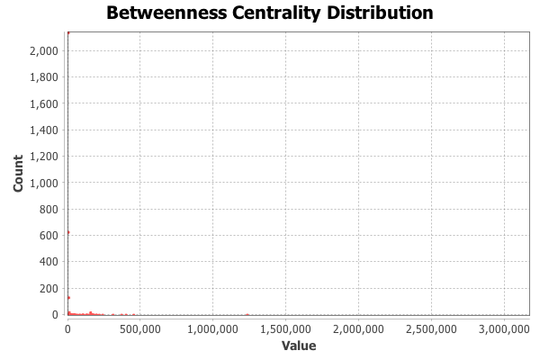
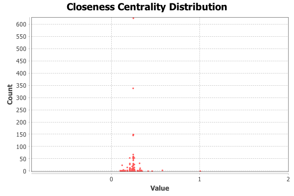
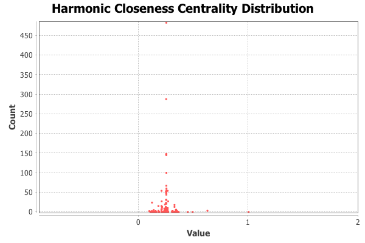
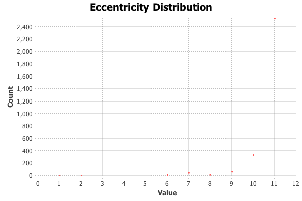

Graph Distance Report
Parameters:
Network Interpretation: undirected
Results:
Diameter: 11
Radius: 1
Average Path length: 4.2747319590007065




Algorithm:
Ulrik Brandes, A Faster Algorithm for Betweenness Centrality, in Journal of Mathematical Sociology 25(2):163-177, (2001)